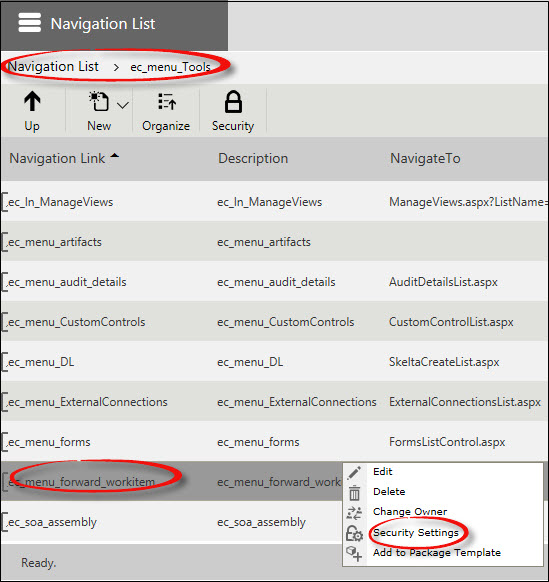
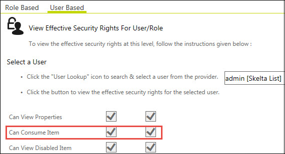

No
Forwarding Work Items
In AVEVA Work Tasks, you can view the work items in two different modes.
- Normal View: In the normal view, you can see all the assigned work items.
- Manager View: In the manager view, you can see all the assigned work items in addition to all the work items assigned to the users reporting to the reportees.
In both these views, you have the provision to forward the work items.
Apart from Inbox, the following users should be able to view and forward the work items from the Manage Work items in the Enterprise Console:
- Owner of the workflows
- Users who are not owners of the workflows, but part of the default Administrator security group.
To open Manage Work Items:
- In the Enterprise Console, click the Menu icon, click Tools, and then click Manage Work items.
- By default repository configuration, only the users who belong to the Administrator security group will be able to see this menu item.
To View 'Manage Work items' in the Enterprise Console
To view the Manage Work items option in the Enterprise Console menu, you must have the Can Consume Item right for Manage Work item list item (ec_menu_forward_work item) in the Manage Navigation List of repository settings.


For details about the Manage Navigation List, see Manage Navigation List.
Forward Work Items
To forward work items, you must have the Can Forward Work Item right. For example, if the user belongs to the security group Administrator, the Can Forward Work Item right should be enabled for the Administrator security group.
To forward work items to other users:
- In the Enterprise Console, click the Menu icon, click Tools, and then click Manage Work items. The Manage Work items page appears.
In the Manage Work items page, you can see the work items of all the workflows owned by you.
- Select the required work item(s) to forward to a different user.
- Click Forward. Alternatively, right-click the work item and then click Forward. The Select a user and forward the work item(s) dialog box appears.
- Click the User Lookup icon to select a user. The User Lookup dialog box appears. Select only one user at a time to forward work item(s).
- Search and enter the user name.
- Click Update.
- Click Forward. The selected work item gets assigned to the selected user and the information is updated in the grid.
Kill Work Items
To kill or abort work items, the user should have the Can Kill Work Item right. For example, if the user belongs to the security group Administrator, the Can Kill Work Item right should be enabled for the Administrator security group.